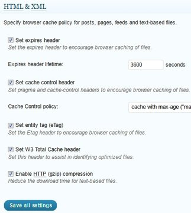
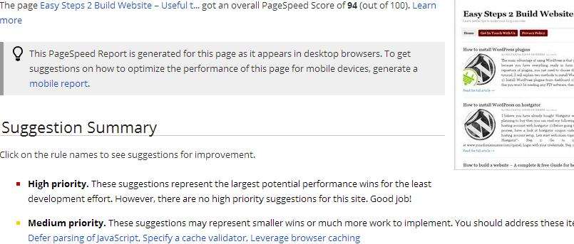

Hi All, I believe you already know that Google considers more than 200 signals, while determining ranking of a webpage for particular keyword and website speed is one of them. yes you heard it right, Google is more concerned about website speed. As per Google faster sites create happy user and if the site is slow, generally user close such webpage or click on BACK button. if you don’t believe me you can check at Google webmaster blog: sites speed affects ranking.
After reading this, you must be thinking – how to speed up website? That’s why I have written this post. Here I will discuss about W3 total cache plugin, which can improve your website speed. I will also share optimal settings for this plugin. Also we will see a free tool, where you can check your website speed before and after installing this plugin to check the difference.
W3 Total Cache plugin download: You can download the plugin from WordPress: W3 total cache plugin download
W3 total cache settings
First install the plugin from above mentioned link and activate it. After doing so, you will be able to see a “Peformance” tab in the left sidebar of your WordPress dashboard, click on it and start setting it up step by step.
General Settings
General: Under general settings, first thing which you would find is preview mode. Click on “disable”, after disabling it the screen would like the below screenshot.
Page Cache:
Page cache – Enable
Page Cache method: Disk Enhanced
Minify:
Minify: Enable
Minify Mode: Auto
Minify cache method: Disk
Database Cache:
Database Cache: Enable
Database Cache Method: Disk
Object Cache:
Object cache: Enable
Object cache method: Disk
Browser Cache:
Browser Cache: Enable
Varnish:
Enable varnish cache purging
CDN: If you have purchased a CDN then enable it otherwise leave as it is. Generally people go for CDN when their blog is getting lots of traffic daily. For small blogs it’s not required.
Page Cache
General:
Cache home page: Check
Cache feeds: site, categories, tags, comments: Check
Cache SSL(https) requests: Uncheck
Cache URLs with query string variables: Uncheck
Cache 404 (not found) pages: Check
Cache requests only for yourdomain.com hostname: Check
Don’t cache pages for logged in users: Check
Advanced:
Keep it as default, changes are not required here.
Cache preload:
Automatically prime the page cache: Check
Update interval: 900 seconds
Pages per interval: 10
Sitemap URL: Specify your sitemap URL here.
Purge policy: Leave it as it is.
Minify
General:
Rewrite URL structure: Check
Disable minify for logged in users: Check
Minify error notification: Both Admin & Email Notification
HTML & XML:
HTML minify settings: Enable
Inline CSS minification: Check
Inline JS modification: Check
Don’t minify feeds: Uncheck
Clean: Uncheck
Hide comments: Check
JS:
JS minify settings: Enable
Combine only after <head>: Uncheck
Combine only after <body>: Uncheck
Combine only before </body>: Uncheck
Preserved comment removal (not applied when combine only is active): Check
Line break removal (not safe, not applied when combine only is active): Check
CSS:
CSS minify settings: Enable
Combine only: Check
Preserved comment removal (not applied when combine only is active): Check
Line break removal (not applied when combine only is active): Check
Database Cache
Don’t cache queries for logged in users: Check
Object Cache
No changes are required
Browser Cache
General:
Set expires header: Check
Set cache control header: Check
Set entity tag (eTag): Check
Set W3 total cache header: Check
Enable http(gzip) compression: Check
Prevent cachning of objects after settings change: Check
DO not process 404 errors for static objects with WordPress: Check
CSS & JS:
HTML & XML:

Media & Other files:
That’s it, you are done with the optimal W3 total cache settings. Now it’s time to check your website speed.
Check Website speed
You can check your website speed at PageSpeed insights to speed up website. Apart from this, there are many free tools available to speed up website, some of them are-
1) As mentioned above one of the tool is page speed
2) Free tool from yahoo – Yslow
3) Webpagetest – for optimization checklist
Page speed tool is good and enough to check it. Before installing W3 total cache plugin, my website speed score was 84/100 and after installation, it got improved to 94/100, check out the below screenshot –

If you have any questions regarding the topic or any issue with W3 total cache settings, feel free to drop a comment below. Also please let us know how was your experience with W3 total cache plugin and whether it was able to speed up your website.
I have a doubt.Is google crawler and cache both are same or different?
thanks for your info dude.. :D
Welcome :).
Let me know if you face any issues while setting up w3 total cache at your site. This is such a best wordpress plugin.
Thanks a lot bro… you solved my problem.
hi there nice write up, i did a similar article how ever i configure it a little different maybe like to read my version :) on shared hosting http://spazlport.com/tech/w3-total-cache-settings-2013-shared-hosting-best-performance/
I have read a lot about W3 cache and its related things, however I always face some problems while loading my site. Sometimes, it takes too much time to get loaded. What could be the reason behind that?